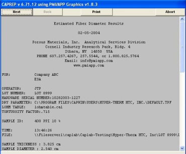

Envelope Surface Area Test Report

After data is recorded and the test is complete, you may analyze the data using the CAPREP Software System. Start CAPREP from within CAPWIN by selecting Report from the Execute Report menu on the CAPWIN main screen.
The report printed for the Envelope Surface Area test consists of a heading, the information shown on the testing setup screen, the average surface area, the average fiber diameter, the spherical particle diameter and a graph of the data gathered during the test.
For more information on using the CAPREP program launch the BAPREP program nad click on the Help button.